Locații de nuntă în Galați
- locații în director
- 11
- cu cazare în registrul SITUR
- 3
- medie ponderată Google
- 4,4 / 5
- evaluări Google
- 6.896
Cum alegi o locație în Galați
În Galați poți începe comparația cu Zolotko (organizator de evenimente), Gardenia by Freddy's (local pentru evenimente), Vila Belvedere (hotel). Aceste proprietăți apar în primele poziții când luăm în calcul împreună nota și numărul de evaluări Google. Salvează adresele care vă interesează pentru a le așeza apoi alături în fișa de comparare a ofertelor.
În fișele proprietăților poți compara dotări concrete la Zolotko (cazare, intrare accesibilă, parcare accesibilă), Gardenia by Freddy's (grădină, intrare accesibilă, toaletă accesibilă). Pentru oferta de nuntă, întreabă ce spații și servicii dintre cele prezentate intră în rezervarea privată pentru data voastră.
Dacă vin rude de departe, Hotel Orient are o unitate de cazare asociată în registrul SITUR. Înregistrarea pentru Orient cuprinde 144 de locuri de dormit în 72 de spații de cazare. Întreabă câte camere pot fi păstrate pentru aceeași noapte înainte să trimiți invitaților detaliile de rezervare.
Dacă vrei să vezi două proprietăți în aceeași zi, poți continua de la Hotel Terra&Beluga Events spre Conacul din SERBANESTI din Liești. Punctele lor sunt la 38,0 km în linie dreaptă. Deschide traseul înainte să fixezi ora celei de-a doua vizite, mai ales dacă grupul se deplasează cu autocarul.
Locații pentru vizionare
Ordinea ține cont de nota Google și de numărul evaluărilor. Cum calculăm ordinea
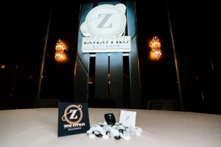
Fotografie a locației · Sursa fotografiei Galați · Organizator de evenimente
Zolotko
Un cuplu își datează nunta la Zolotko în mijlocul lunii iulie și îi mulțumește în mod special lui Iulian pentru organizare.
Drumul de Centură 50, 800402 Galați+40 756 405 962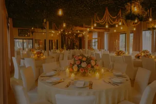
Fotografie a locației · Sursa fotografiei Galați · Local pentru evenimente
Gardenia by Freddy's
Local cu grădină în Galați, nota 4,8 din 21 de evaluări, acces pentru scaun rulant. Ce să întrebi despre capacitate și ploaie la vizionare.
C4XV+8C2, 800170 Galați+40 728 131 013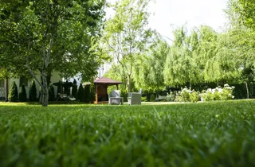
Fotografie a locației · Sursa fotografiei Galați · Hotel
Vila Belvedere
După trei nopți la Vila Belvedere, un oaspete separă impresia bună despre curte și parcare de cea despre camera în care a dormit.
Str. Şoimului Nr. 1, 800078 Galați+40 236 499 780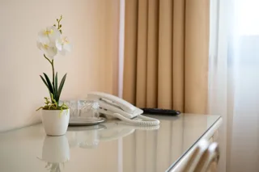
Fotografie a locației · Sursa fotografiei Galați · Cazare
Hotel Orient
Hotel Orient. În Galați, un oaspete care rezervase la Orient pentru trei persoane povestește că a primit un apartament cu două camere și paturi duble.
Str. Victor Valcovici, 800600 Galați+40 771 626 075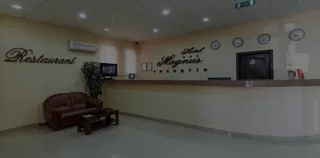
Fotografie a locației · Sursa fotografiei Galați · Hotel
Hotelul Magnus - Galati
Hotelul Magnus - Galati. Un oaspete care a stat trei nopți cu un lot de minifotbal menționează parcarea încăpătoare și micul dejun variat.
Strada Oțelarilor 27B, 800606 Galați+40 730 624 687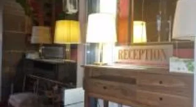
Fotografie a locației · Sursa fotografiei Galați · Hotel
Hotel Jolie Apartments
Hotel Jolie Apartments, Galați. La Jolie Apartments, numele categoriei de cameră merită trecut în rezervare împreună cu o fotografie recentă.
langa Faleza Dunarii, Strada Morilor 215, 800305 Galați+40 749 824 937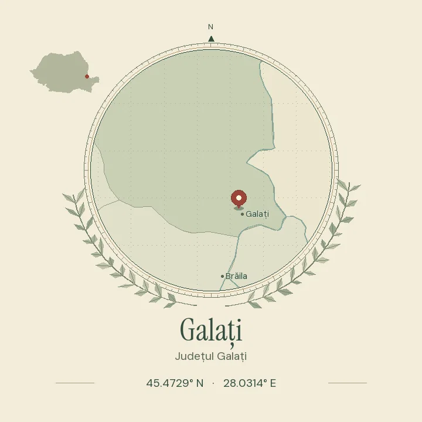
Hartă ilustrată Galați · Hotel
Hotel Terra&Beluga Events
Hotel Terra&Beluga Events, Galați. Dacă sunt și copii la masă, stabilește meniul lor cu bucătăria și ora la care ar putea fi servit.
Aleea Meteo 4, 800183 Galați+40 771 182 415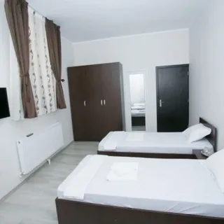
Fotografie a locației · Sursa fotografiei Galați · Cazare în regim hotelier
Casa Stefan Galati
Cameră la 220 de lei pe noapte în centrul Galațiului, cu parcare în curte și terasă rustică; zgomotul de pe terasă e de verificat.
Strada Sfântul Spiridon 38, 800051 Galați+40 771 127 573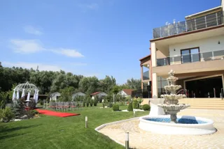
Fotografie a locației · Sursa fotografiei Galați · Hotel
Riverside Residence Galati
Riverside Residence Galati. La Riverside Residence, cele o sută cincizeci de locuri indicate pentru nuntă se referă la terasă și foișor împreună.
827100 Galați+40 743 217 730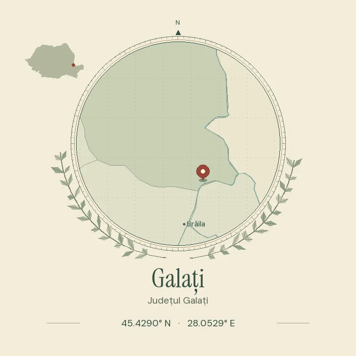
Hartă ilustrată Galați · Hotel
Hotel Faleza by Vega
Hotel pe malul Dunării în Galați, cu 73 de camere și vedere spre fluviu; multe recenzii reclamă muzica clubului de la parter până dimineața.
Strada Roșiori 1, 800066 Galați+40 733 660 033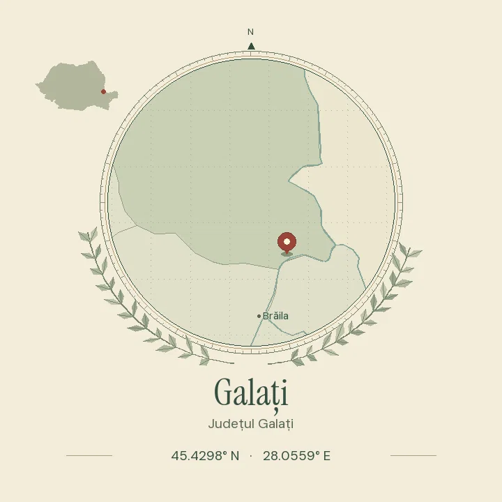
Hartă ilustrată Galați · Hotel
Vega Hotel
Vega Hotel, Galați. Un oaspete al hotelului Vega a urmărit Dunărea de la cazare și a găsit pe faleză mai multe terase la care putea ajunge ușor.
Bulevardul Marea Unire 107, 800329 Galați+40 742 033 033
Întrebări despre locațiile din Galați
Unde pot dormi invitații în Galați?
În registrul de cazare SITUR găsim Hotel Orient (144 de locuri de cazare), Hotelul Magnus - Galati (98 de locuri de cazare), Vega Hotel (138 de locuri de cazare). Verifică ce camere sunt libere pentru noaptea evenimentului.
Ce proprietăți din Galați au grădină sau terasă?
Gardenia by Freddy's (grădină); Vila Belvedere (grădină); Hotel Jolie Apartments (grădină, terasă). Cere administratorului condițiile de folosire pentru o petrecere privată.
Care locație din Galați are cele mai multe evaluări Google?
Hotelul Magnus - Galati are 1.268 de evaluări în profilul Google folosit la documentare. Evaluările acoperă și alte experiențe la proprietate, inclusiv vizitele fără eveniment.
Unde apare o intrare accesibilă în Galați?
Profilurile Google indică o intrare accesibilă la Zolotko, Gardenia by Freddy's, Hotel Orient. Pentru o cununie în exterior, cere detalii despre traseul dintre intrare și zona cu scaune.
Ce alte localități pot include într-o vizionare lângă Galați?
Cele mai apropiate adrese comparate pe hartă sunt în Liești. Găsești mai jos distanțele dintre proprietățile folosite pentru această comparație.
Vizionări în apropiere
- Liești · 1 locație. Între Hotel Terra&Beluga Events și Conacul din SERBANESTI sunt 38,0 km în linie dreaptă.